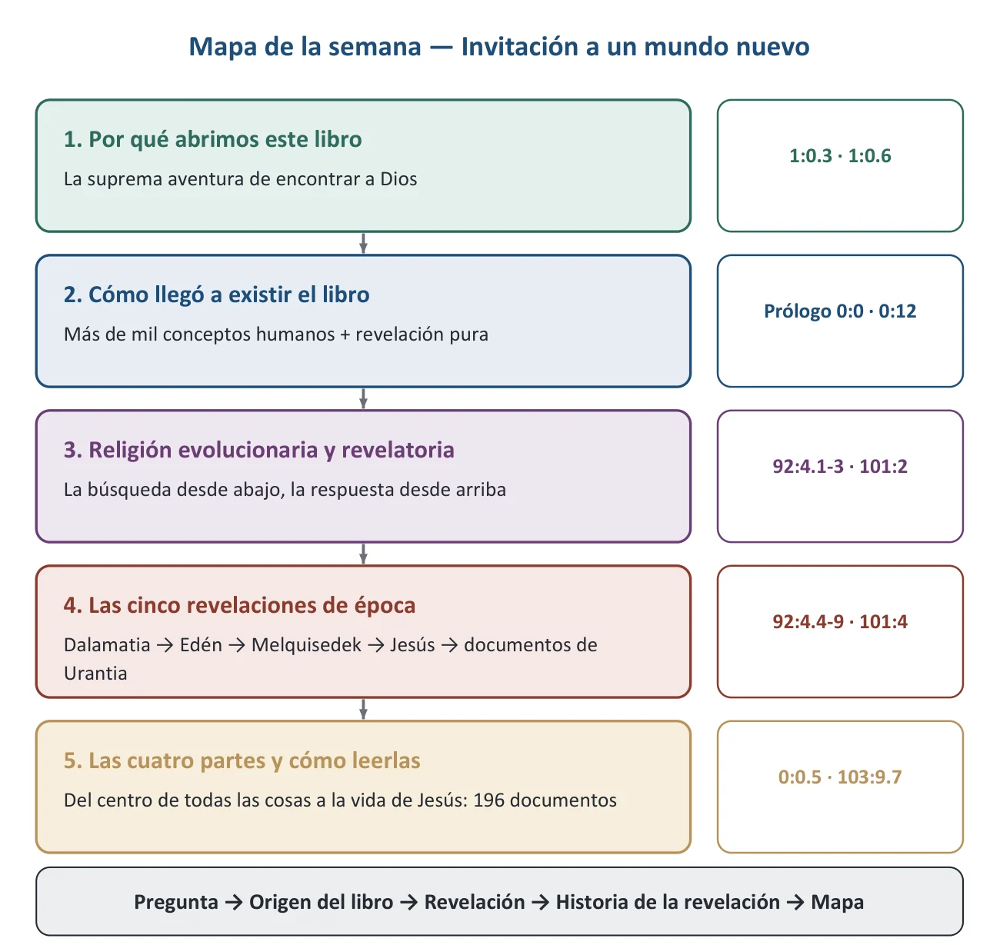
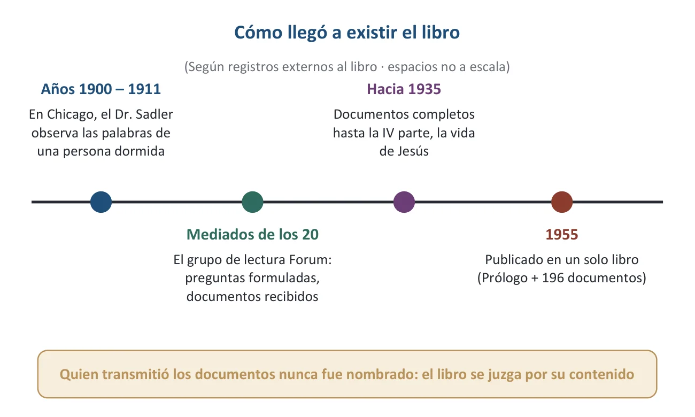
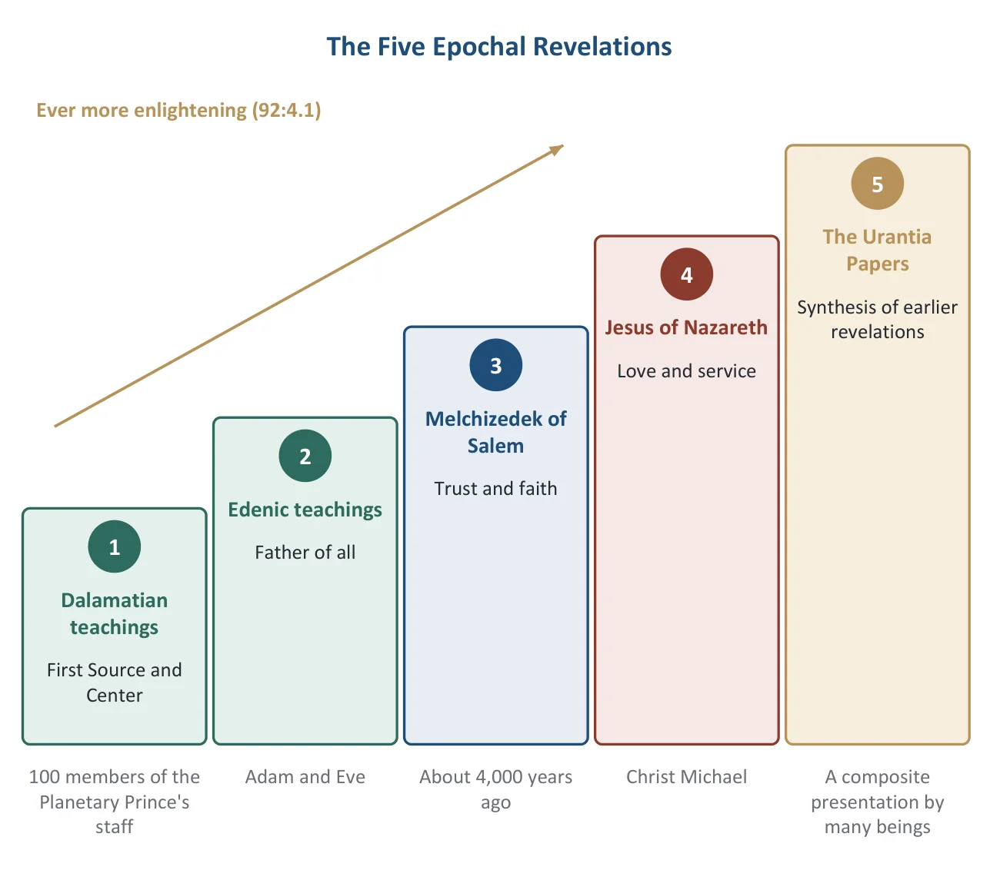
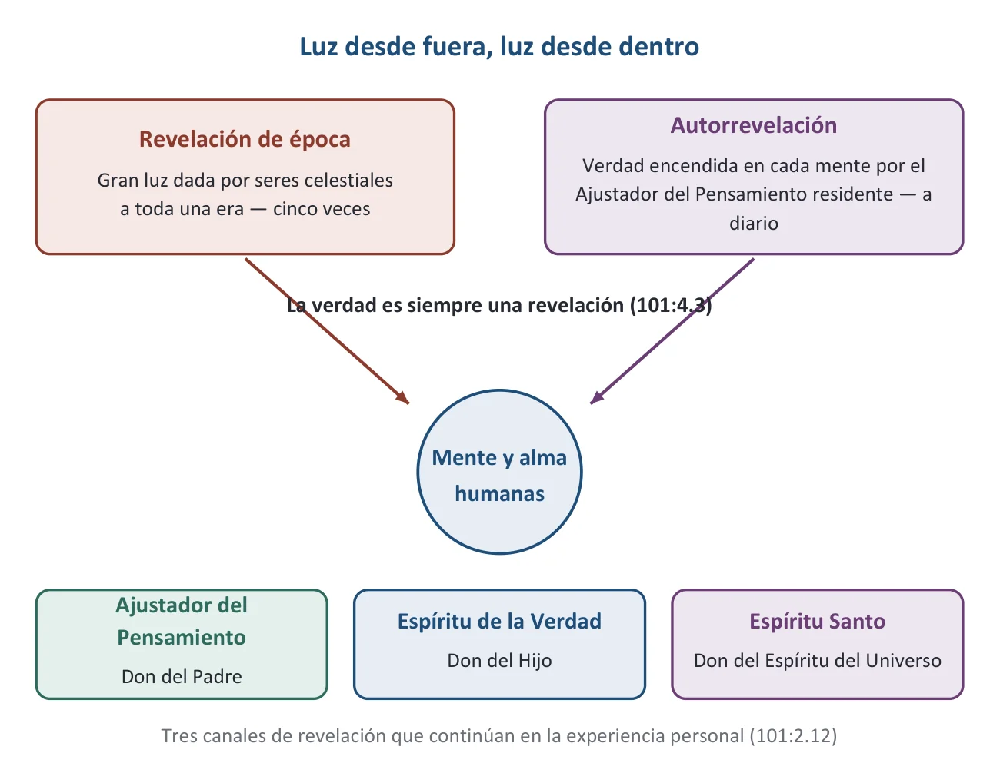
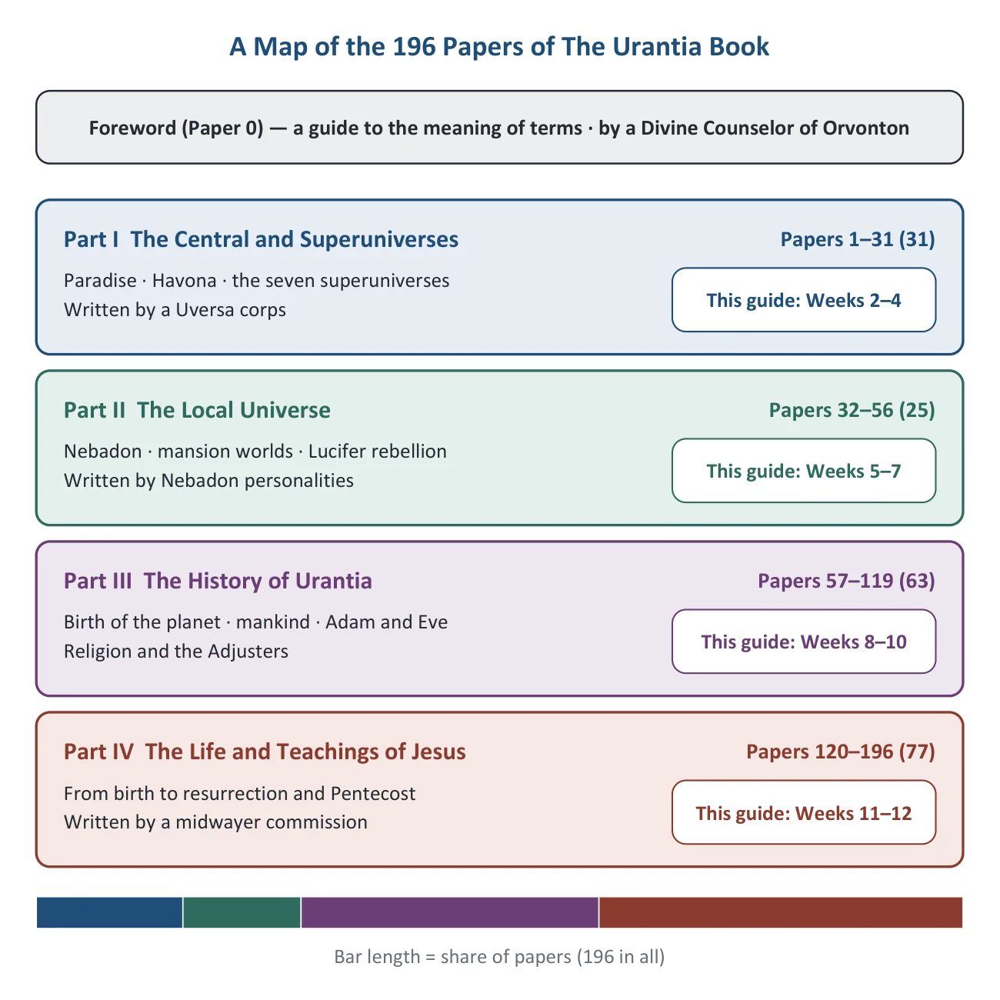

Lectura: Prólogo · Documento 1 · Documento 92:4 · Documento 101:2, 4

El libro de Urantia se presenta a sí mismo como una revelación. Si la religión evolucionaria es el largo camino por el que la humanidad ha ido subiendo a tientas hacia la verdad, la revelación es la respuesta que llega desde arriba. El libro dice que en la historia humana ha habido cinco revelaciones de significado de época y que él es la quinta; pero reconoce con franqueza que ninguna revelación es completa y que, en particular, sus afirmaciones científicas no son inspiradas. Esta semana tomamos en la mano un gran mapa de lo que es este libro y de cómo está organizado.
Imagine a alguien de pie en una estación de metro de una ciudad que nunca ha visitado. Lo sensato no es subir al primer tren que llegue, sino estudiar primero el plano de líneas que hay en la pared. Cuando uno sabe dónde está, adónde va y dónde tiene que cambiar de línea, los nombres desconocidos de las estaciones empiezan a encajar uno tras otro.
Quien abre El libro de Urantia por primera vez está en una situación muy parecida. La edición original en inglés tiene 2097 páginas: un Prólogo y 196 documentos. Palabras como Havona, Nebadon, Satania y Ajustador del Pensamiento brotan desde la primera página. Si uno sube sin mapa, es fácil perderse.
Esta guía quiere ser ese plano de líneas. En doce semanas da una vuelta completa al libro, aunque no se detiene en todas las estaciones. En la primera semana miramos el mapa mismo.
La gente llega a este libro por muchas razones, pero en el fondo suele haber las mismas preguntas. ¿De dónde vengo? ¿Para qué estoy vivo? ¿Qué hay más allá de la muerte? ¿Existe Dios de verdad y, si existe, cómo es?
El libro de Urantia no trata estas preguntas a la ligera. Al contrario, dice que son el punto de partida de un camino que recorren juntos todos los seres inteligentes del universo. El documento 1, el primero del texto principal, presenta así la búsqueda de Dios.
Todos los mundos esclarecidos reconocen y adoran al Padre Universal, el hacedor eterno y sustentador infinito de toda la creación. Las criaturas volitivas de universo tras universo han emprendido el largo, muy largo, viaje al Paraíso, que es el desafío fascinador de la aventura eterna de llegar a Dios el Padre. La meta trascendente de los hijos del tiempo es encontrar al Dios eterno, comprender la naturaleza divina, reconocer al Padre Universal. Las criaturas que conocen a Dios tienen una sola ambición suprema, un solo ardiente deseo, y ése es llegar —como son en sus esferas— a ser semejantes a como es él en su perfección paradisiaca de personalidad y en su esfera universal de supremacía recta. Del Padre Universal que habita la eternidad ha emanado el mandato supremo: «Sed vosotros perfectos, así como yo soy perfecto». En amor y misericordia, los mensajeros del Paraíso han llevado esta exhortación divina a través de las edades y a través de los universos, aún hasta llegar a las criaturas tan bajas de origen animal como lo son las razas humanas de Urantia.1:0.3
Las «criaturas volitivas» son seres que pueden tomar sus propias decisiones; los «hijos del tiempo» son seres nacidos en el tiempo que crecen dentro de él. Los seres humanos estamos entre ellos. El documento 1 llama a este viaje una «aventura», y al final de esa misma introducción lo vuelve a decir.
Éste es el verdadero significado de ese mandato divino: «Sed perfectos, así como yo soy perfecto», que insta constantemente al hombre mortal hacia adelante y le atrae hacia adentro en esa larga y fascinadora lucha por alcanzar niveles cada vez más elevados de valores espirituales y auténticos significados de universo. Esta sublime búsqueda del Dios de los universos es la aventura suprema de los habitantes de todos los mundos del tiempo y el espacio.1:0.6
¿Puede leer este libro alguien sin formación en teología? El libro responde de antemano a esa inquietud.
La comprensión de la religión no ha sido nunca ni será jamás dependiente de gran saber o de lógica ingeniosa. Es discernimiento interior espiritual, y ésa es precisamente la razón por la cual algunos de los más grandes maestros religiosos del mundo, aun los profetas, a veces han poseído tan poco de la sabiduría del mundo. La fe religiosa está al alcance tanto de los cultos como de los incultos.101:2.15
El libro está lleno de una cosmología desconocida y de nombres largos, pero nadie tiene que memorizarlos todos para acercarse a Dios. El conocimiento es una lámpara que alumbra el camino; la fuerza para recorrerlo viene del discernimiento y de la fe.
La primera parte de esta sección no procede de El libro de Urantia; es un resumen del autor a partir de registros que quedaron fuera del libro. Según se suele contar, la historia comienza a principios del siglo XX en Chicago. Un médico, el doctor William Sadler, observó durante años el caso de un hombre que pronunciaba palabras insólitas mientras dormía. Nunca logró explicar de dónde venían esas palabras.
Desde mediados de la década de 1920, un grupo de lectura llamado el Foro (Forum) se reunía en casa del doctor Sadler. Los documentos fueron llegando uno tras otro, como en respuesta a las preguntas que el grupo había planteado, y hacia 1935 alcanzaron hasta la cuarta parte, sobre la vida de Jesús. Tras una larga preparación se publicaron en un solo libro en 1955. El nombre de la persona a través de la cual llegaron los documentos sigue sin hacerse público. El libro se juzga por su contenido, no por la reputación de nadie.

Entremos ahora en el texto. Al final de cada documento de El libro de Urantia se indica quién es su autor. El Prólogo, al comienzo de todo, lo escribió un Consejero Divino del superuniverso de Orvonton, que empieza explicando por qué lo escribió.
EN LA MENTE de los mortales de Urantia —siendo éste el nombre de vuestro mundo— existe gran confusión en cuanto al significado de términos tales como Dios, divinidad y deidad. Los seres humanos están aún más confundidos e inciertos acerca de las relaciones de las personalidades divinas designadas por estos numerosos apelativos. Debido a esta pobreza conceptual asociada con tal confusión ideacional, se me ha exhortado a que formule esta declaración introductoria como explicación de los significados que deben corresponder a ciertos símbolos verbales que, de aquí en adelante, serán utilizados en estos documentos, que el cuerpo de Orvonton de reveladores de la verdad ha sido autorizado a traducir al idioma inglés de Urantia.0:0.1
El Prólogo es una especie de glosario. Su autor explica también por qué resulta difícil desde el principio.
Pero para formular este Prólogo de definiciones y limitaciones de la terminología, es necesario anticipar el uso de estos términos en las presentaciones subsiguientes. Este Prólogo no es, por lo tanto, una declaración completa en sí misma; tan sólo constituye una guía definitiva designada para asistir a aquellos que leerán los documentos acompañantes que tratan de la Deidad y del universo de los universos, formulados por una comisión de Orvonton enviada a Urantia con este propósito.0:0.4
Como es una guía escrita con los documentos posteriores ya a la vista, es natural que parezca extraña en una primera lectura. El autor confiesa lo difícil que es expresar conceptos celestiales con palabras humanas.
En nuestro intento de ampliar la conciencia cósmica y elevar la percepción espiritual, nos es extremadamente difícil presentar conceptos ampliados y una verdad superior, estando, como lo estamos, restringidos en el uso de un idioma circunscrito del reino. Pero nuestro mandato nos obliga a hacer todo esfuerzo posible para transmitir nuestro objetivo, utilizando símbolos verbales del idioma inglés. Se nos ha instruido que introduzcamos nuevos términos sólo cuando para el concepto que se debe describir no existe terminología alguna en inglés que pueda ser empleada para transmitir dicho concepto nuevo ya sea parcialmente o aun con una mayor o menor distorsión de significado.0:0.2
Esta confesión marca el tono con que hay que leer el libro. Sus frases vierten un significado celestial en el pequeño recipiente del lenguaje humano. Por eso, en lugar de aferrarnos a una palabra concreta, leemos buscando el significado al que apuntan las palabras.
El Reconocimiento, al final del Prólogo, contiene una confesión aún más llamativa. Los autores dicen que no se limitaron a derramar desde arriba un conocimiento celestial.
Al formular las presentaciones subsiguientes, que tienen que ver con la descripción del carácter del Padre Universal y de la naturaleza de sus asociados en el Paraíso, juntamente con un intento de descripción del perfecto universo central y de los siete superuniversos que lo rodean, seguimos las directivas del mandato de los gobernantes superuniversales que nos ordenan que, en todos nuestros esfuerzos por revelar verdad y coordinar conocimiento esencial, demos preferencia a los conceptos humanos más elevados ya existentes relativos a los temas a ser presentados. Podemos recurrir a la revelación pura, sólo cuando el concepto de presentación no revela una expresión previa adecuada en la mente humana.0:12.11
Las sucesivas revelaciones planetarias de la verdad divina invariablemente comprenderán los conceptos más elevados existentes de valores espirituales como parte de la coordinación nueva y mejorada del conocimiento planetario. Por lo tanto, al hacer estas presentaciones sobre Dios y sus asociados universales, hemos seleccionado como base de estos documentos más de mil conceptos humanos que representan el conocimiento planetario más elevado y más avanzado de los valores espirituales y de los significados universales. En la medida en que estos conceptos humanos, allegados a partir de los mortales del pasado y el presente conocedores de Dios sean inadecuados para describir la verdad tal como se nos instruye que la revelemos, los suplementaremos sin titubeos, recurriendo para este propósito a nuestro conocimiento superior de la realidad y divinidad de las Deidades del Paraíso y de su trascendente universo de residencia.0:12.12
Estos dos párrafos son una clave del carácter de todo el libro. Los reveladores usaron primero los pensamientos más elevados que los seres humanos ya habían alcanzado, y aportaron algo nuevo solo donde los humanos aún no habían encontrado palabras. El cielo convirtió los esfuerzos de quienes buscaban a Dios en sus piedras de cimiento. A continuación, el Prólogo nombra a Aquel que, dentro de nosotros, hace posible esta difícil tarea.
Conocemos plenamente las dificultades de nuestra tarea; reconocemos la imposibilidad de traducir plenamente el idioma de los conceptos de la divinidad y la eternidad a los símbolos de un idioma de conceptos finitos de la mente mortal. Pero sabemos que reside dentro de la mente humana un fragmento de Dios y que permanece con el alma humana el Espíritu de la Verdad; también sabemos que estas fuerzas espirituales se conjuran en facilitar al hombre material para que capte la realidad de los valores espirituales y entienda la filosofía de los significados universales.0:12.13
El «fragmento de Dios» es el Ajustador del Pensamiento que mora en cada persona. Por difíciles que sean las frases del libro, Aquel que nos ayuda a entenderlas ya vive dentro del lector.
Para leer El libro de Urantia necesitamos distinguir primero dos clases de religión. En el pasado remoto, la gente temblaba ante el trueno, la enfermedad y la muerte. Para apaciguar a los poderes invisibles surgieron sacrificios, conjuros y tabúes, que a lo largo de largas edades se fueron refinando hasta convertirse en religión. Esta es la religión evolucionaria. Muy distinta es la verdad que llega desde arriba. A esto se le llama revelación, y la religión nacida de la revelación se llama religión revelatoria. El documento 92 resume la diferencia.
La religión evolucionaria es sentimental, no es lógica. Es la reacción del hombre a la creencia en un mundo hipotético de los espíritus fantasmales, que es el reflejo de creencia humano, excitado por la realización y temor de lo desconocido. La religión revelatoria es expuesta por el verdadero mundo espiritual; es la respuesta del cosmos superintelectual al hambre mortal por creer en las Deidades universales y confiar en ellas. La religión evolucionaria ilustra los intentos tortuosos de la humanidad en búsqueda de la verdad; la religión revelatoria es esa verdad misma.92:4.3
«Intentos tortuosos» es la expresión exacta. La religión evolucionaria da un largo rodeo, pero sigue siendo un esfuerzo sincero por alcanzar la verdad, y El libro de Urantia no la desprecia. Cuando los seres humanos se elevan desde abajo, el cielo desciende desde arriba, y la religión crece allí donde las dos manos se encuentran. ¿Cómo se reconoce, entonces, la religión revelatoria?
Pero aparte de la aparente conexión o derivación, las religiones de revelación siempre están caracterizadas por una creencia en una Deidad de valor final y en el concepto de la sobrevivencia de la identidad de la personalidad después de la muerte.92:4.2
| Punto de comparación | Religión evolucionaria | Religión revelatoria |
|---|---|---|
| Dirección | De abajo arriba: la búsqueda humana | De arriba abajo: la respuesta del cielo |
| Punto de partida | El temor a lo desconocido | Expuesta por el verdadero mundo espiritual |
| Carácter | Sentimental, no lógica | Esa verdad misma |
| Rasgo | Ritos para apaciguar a fantasmas y espíritus | Una Deidad de valor final; la supervivencia después de la muerte |
| Relación | Elevada y corregida por la revelación | Se mantiene en contacto con la evolución y la guía |
La revelación sigue un principio importante: nunca lo da todo de una vez.
La revelación es evolucionaria pero siempre progresista. A través de las edades de la historia de un mundo, las revelaciones de la religión son cada vez más amplias y sucesivamente más esclarecedoras. Es misión de la revelación ordenar y censurar las sucesivas religiones de evolución. Pero si la revelación exalta y eleva las religiones de evolución, estas visitaciones divinas deben ilustrar enseñanzas que no estén demasiado alejadas del pensamiento y las reacciones de la edad en la cual se presentan. Por eso la revelación debe siempre mantenerse en contacto con la evolución, y lo hace. Siempre la religión de revelación deberá limitarse por la capacidad del hombre para recibirla.92:4.1
Este principio es la clave de las cinco revelaciones de la sección siguiente. Cada edad recibió tanto como podía soportar, y cada nueva revelación añadió otra capa sobre la anterior. La fe personal funciona igual: una frase que hoy no tiene sentido puede iluminarse dentro de unos años.
La revelación no nos pide que abandonemos la razón.
La razón es el método de la ciencia; la fe es el método de la religión; la lógica es la técnica intentada de la filosofía. La revelación compensa la ausencia del punto de vista morontial, proveyendo una técnica para llegar a la unidad en la comprensión de la realidad y de las relaciones de la materia y el espíritu por la mediación de la mente. La verdadera revelación no vuelve jamás artificial a la ciencia, irrazonable a la religión ni ilógica a la filosofía.101:2.2
La razón es la prueba de la ciencia; la fe, la prueba de la religión; la lógica, la prueba de la filosofía, pero la revelación se valida sólo por la experiencia humana. La ciencia produce conocimiento; la religión produce felicidad; la filosofía produce unidad; la revelación confirma la armonía experimental de este alcance trino a la realidad universal.101:2.8
La prueba final de una revelación no es la autoridad, sino la experiencia. El documento 101 une las tres en una sola frase.
La razón, mediante el estudio de la ciencia, puede conducir, a través de la naturaleza, de vuelta a una Primera Causa, pero se necesita la fe religiosa para transformar la Primera Causa de la ciencia en un Dios de salvación; y la revelación se necesita ulteriormente para validar tal fe, tal discernimiento interior espiritual.101:2.3
La razón llega tan lejos como puede, la fe continúa más allá, y la revelación confirma esa fe. Si lo que dice este libro es verdad se mostrará en la vida de quienes intenten vivir según sus enseñanzas.
En su última noche con los discípulos, Jesús dijo: «Aun tengo muchas cosas que deciros, mas ahora no las podéis llevar» (Juan 16:12). La Epístola a los Hebreos dice también que Dios habló «muchas veces y en muchas maneras» (Hebreos 1:1). La idea de que Dios da una luz cada vez mayor en porciones que podemos soportar es común a la Biblia y a El libro de Urantia.
El documento 92 dice que, entre las muchas revelaciones grandes y pequeñas, solo cinco han tenido «significado de época».
Ha habido muchos acontecimientos de revelación religiosa pero sólo cinco de significado de época. Éstos fueron como sigue:92:4.4
La primera llegó hace cientos de miles de años en Dalamatia. El séquito que trajo el Príncipe Planetario, el gobernante enviado por el universo local para supervisar el planeta, fue el primero en enseñar acerca de Dios.
1. Las enseñanzas dalamatianas. El verdadero concepto de la Primera Fuente y Centro fue promulgado por primera vez en Urantia por los cien miembros corpóreos del séquito del Príncipe Caligastia. Esta revelación de la Deidad en expansión duró más de trescientos mil años hasta que fue repentinamente interrumpida por la secesión planetaria y la ruptura del régimen de enseñanza. Excepto por el trabajo de Van, la influencia de la revelación dalamatiana prácticamente se perdió en todo el mundo.92:4.5
La segunda fueron Adán y Eva en el Jardín del Edén. Su misión se interrumpió antes de florecer, pero quedaron semillas de verdad.
2. Las enseñanzas edénicas. Adán y Eva nuevamente ilustraron el concepto del Padre de todos para los pueblos evolucionarios. La disolución del primer Edén interrumpió el curso de la revelación adánica antes de que hubiera comenzado plenamente. Pero las enseñanzas abortadas de Adán fueron continuadas por los sacerdotes setitas y algunas de estas verdades nunca se han perdido completamente en el mundo. La entera tendencia de la evolución religiosa levantina fue modificada por las enseñanzas de los setitas. Pero hacia el año 2500 a. de J. C. la humanidad había perdido en gran parte de vista la revelación patrocinada en los días del Edén.92:4.6
La tercera fue Maquiventa Melquisedek, que apareció en Salem hace unos cuatro mil años. Enseñó a Abraham, y su nombre aparece en Génesis 14.
3. Melquisedek de Salem. Este Hijo de urgencia de Nebadon inauguró la tercera revelación de la verdad en Urantia. Los preceptos cardinales de sus enseñanzas fueron confianza y fe. Enseñó la confianza en la beneficencia omnipotente de Dios y proclamó que la fe era el acto por el cual el hombre ganaba el favor de Dios. Sus enseñanzas gradualmente se mezclaron con las creencias y prácticas de varias religiones evolucionarias y finalmente se desarrollaron en esos sistemas teológicos presentes en Urantia al principio del primer milenio después de Cristo.92:4.7
La cuarta fue Jesús de Nazaret. El libro presenta a Jesús como Micael, el Hijo Creador que hizo nuestro universo local, nacido en el mundo como ser humano.
4. Jesús de Nazaret. Cristo Micael presentó por cuarta vez a Urantia el concepto de Dios como Padre Universal, y esta enseñanza en general ha persistido desde entonces. La esencia de su enseñanza era amor y servicio, la adoración amante que la criatura otorga voluntariamente en reconocimiento del ministerio amante de Dios su Padre, y en respuesta al mismo; el servicio por libre albedrío que estas criaturas otorgan a sus hermanos en la comprensión regocijada de que, mediante este servicio, están sirviendo del mismo modo a Dios el Padre.92:4.8

| N.º | Revelación | Enseñanza central | Qué fue de ella |
|---|---|---|---|
| 1 | Enseñanzas dalamatianas | Dios como Primera Fuente y Centro | Interrumpida por la rebelión; casi perdida |
| 2 | Enseñanzas edénicas | El Padre de todos | Detenida pronto; conservada en parte por los sacerdotes setitas |
| 3 | Melquisedek de Salem | Confianza y fe | Mezclada en muchas religiones |
| 4 | Jesús de Nazaret | El Padre Universal; amor y servicio | En general ha perdurado |
| 5 | Los documentos de Urantia | Síntesis y ampliación de las revelaciones anteriores | Ahora en nuestras manos |
La quinta es el libro mismo que estamos leyendo. Es de otra naturaleza que las cuatro primeras: no es la enseñanza de una personalidad que vino en persona, sino escritos producidos por muchos seres juntos.
5. Los documentos de Urantia. Los documentos, de los cuales éste es uno, constituyen la presentación más reciente de la verdad a los mortales de Urantia. Estos documentos difieren de todas las revelaciones previas, porque no son trabajo de una sola personalidad universal sino una combinación de presentaciones de muchos seres. Pero ninguna revelación es completa hasta la que se obtiene cuando se llegue al Padre Universal. Todas las demás ministraciones celestiales no son más que parciales, transitorias y adaptadas prácticamente a las condiciones locales en el tiempo y en el espacio. Aunque estas admisiones puedan tal vez restar la fuerza y autoridad inmediatas a todas las revelaciones, ha llegado el momento en Urantia en que es aconsejable hacer estas declaraciones francas92:4.9
Es raro que una revelación se declare incompleta. El documento 101 dice de antemano que sus afirmaciones científicas tendrán que corregirse algún día.
La humanidad debe comprender que nosotros, quienes participamos en la revelación de la verdad, estamos limitados muy rigurosamente por las instrucciones de nuestros superiores. No tenemos libertad para anticipar los descubrimientos científicos de mil años. … Bien sabemos que, mientras los hechos históricos y las verdades religiosas de esta serie de presentaciones reveladoras permanecerán en los registros de las eras venideras, dentro de pocos años muchas de nuestras declaraciones sobre las ciencias físicas necesitarán una revisión como consecuencia de desarrollos científicos adicionales y de nuevos descubrimientos. … Aclaremos que las revelaciones no son necesariamente inspiradas. La cosmología de estas revelaciones no es inspirada. Está limitada por el permiso que tenemos para la coordinación y selección del conocimiento actual. Aunque el discernimiento divino o espiritual sea un don, la sabiduría humana debe evolucionar.101:4.2
¿Por qué poner un límite así? A los reveladores se les prohibía entregar conocimientos que los humanos aún no habían descubierto, de modo que se limitaron a ordenar la ciencia de la década de 1930. Sabían que este límite podía convertirse en piedra de tropiezo para los lectores.
Toda cosmología presentada como parte de la religión revelada está destinada a ser superada en un período muy corto. Por lo tanto, los estudiantes futuros de tal revelación están tentados a descartar todo elemento de verdad religiosa genuina que pueda contener, debido a que descubren errores frente a las cosmologías asociadas que allí se presentan.101:4.1
La petición es sencilla: no desechar la verdad sobre Dios solo porque una afirmación científica haya envejecido. El documento 101 ofrece este criterio para juzgar la religión.
En último análisis, la religión debe juzgarse por sus frutos, de acuerdo con la manera y el grado en el que exhibe su propia excelencia inherente y divina.101:4.4
Un malentendido frecuente: una revelación verdadera debe estar libre de todo error, y si una sola cosa en ella es incorrecta, todo es falso. Lo que dice El libro de Urantia: el libro afirma que no es completo (92:4.9). Su cosmología y sus afirmaciones científicas no son inspiradas y están ligadas al conocimiento de su tiempo (101:4.2). Los hechos históricos y las verdades religiosas perdurarán, pero las afirmaciones científicas pueden revisarse. La religión ha de juzgarse por sus frutos (101:4.4).
Las cinco revelaciones son grandes luces dadas a la humanidad en su conjunto. Sin embargo, El libro de Urantia dice que la revelación ocurre también cada día, en cada persona.
La verdad es siempre una revelación: autorrevelación cuando surge como resultado del trabajo del Ajustador residente; revelación de época cuando se presenta mediante la función de alguna otra agencia, grupo o personalidad celestial.101:4.3
El documento 101 nombra además los canales por los que continúa esta revelación personal.
La revelación como fenómeno de época es periódica; como experiencia personal humana es continua. La divinidad funciona en la personalidad mortal como el don Ajustador del Padre, como el Espíritu de la Verdad del Hijo y como el Espíritu Santo del Espíritu del Universo; mientras que estas tres dotaciones supermortales se unifican en la evolución experiencial humana, como el ministerio del Supremo.101:2.12
La revelación dada en un libro y la revelación que se despliega en la mente se ayudan mutuamente. El libro aporta el mapa, y el Ajustador interior nos ayuda a reconocer lo que el mapa significa. Volveremos con detalle al Ajustador del Pensamiento en la semana 10.

El libro de Urantia consta del Prólogo y de 196 documentos, divididos en cuatro partes. Van de lo grande a lo pequeño: descienden desde el centro de todas las cosas hasta nuestro propio planeta y, por último, se reúnen en torno a la vida de Jesús. El Prólogo muestra el cuadro completo de una vez, justo al principio.
Vuestro mundo, Urantia, es uno de muchos planetas habitados similares que juntos comprenden el universo local de Nebadon. Este universo, juntamente con otras creaciones similares, forma el superuniverso de Orvonton, desde cuya capital, Uversa, proviene nuestra comisión. Orvonton es uno de los siete superuniversos evolucionarios del tiempo y del espacio que rodean la creación de la perfección divina que no posee ni principio ni fin —el universo central de Havona.0:0.5
El párrafo siguiente da un nombre al conjunto.
Nos referimos comúnmente a los siete superuniversos en evolución asociados con el universo central y divino con el nombre de gran universo; éstos constituyen ahora las creaciones organizadas y habitadas. Todos ellos son parte del universo maestro, que comprende también los universos del espacio exterior no habitados, pero en movilización.0:0.6
Estos dos párrafos contienen las tres primeras partes del libro. La primera parte trata del Paraíso, Havona y los siete superuniversos. La segunda parte desciende a nuestro universo local, Nebadon. La tercera parte es la historia de un solo planeta, Urantia. Y la cuarta parte cuenta cómo el Creador de ese universo vino a este pequeño planeta y vivió como hombre.

No hace falta leerlo de corrido desde la primera página. El Prólogo, al ser un glosario, es al principio la parte más difícil. Quien lee por primera vez puede hojearlo, pasar al documento 1 y volver a él más tarde. Muchas personas se sienten atraídas por la vida de Jesús y empiezan por la cuarta parte.
También importa el espíritu con que leemos. El documento 103 compara la relación entre la fe y la razón con un viaje.
La fe lleva voluntariamente a la razón hasta donde ésta puede llegar, y luego sigue con la sabiduría hasta el límite filosófico total; finalmente se atreve a lanzarse en un viaje universal sin límites ni fin acompañada tan sólo por la verdad.103:9.7
Lea con atención, señale lo que todavía no entiende y lleve a la vida lo que sí entiende. Y el documento 5 dice con claridad lo que hay al final de este camino.
para cada uno de vosotros y para todos nosotros, Dios es accesible, el Padre es alcanzable, el camino está abierto5:1.8
Que el camino esté abierto vale para todos. El documento 32 describe lo que se promete a quienes lo recorren.
Hay en la mente de Dios un plan que involucra a cada criatura de todos sus vastos dominios, y este plan consiste en un propósito eterno de oportunidades ilimitadas, progreso sin límites, y una vida sin fin. ¡Y los tesoros infinitos de esa carrera tan inigualable son vuestros con solo luchar!32:5.7
Ahora que hemos estudiado el plano de líneas, es hora de subir al tren. La semana que viene conoceremos al Padre Universal, la Primera Fuente de todo lo que hay en esta historia.
Un malentendido frecuente: para leer El libro de Urantia hay que abandonar la fe o la iglesia a la que uno pertenece. Lo que dice El libro de Urantia: el libro afirma que se construyó sobre los pensamientos más elevados de hombres y mujeres que conocían a Dios (0:12.12). Su propósito es continuar y ampliar las revelaciones anteriores, sobre todo las enseñanzas de Jesús, no borrarlas.